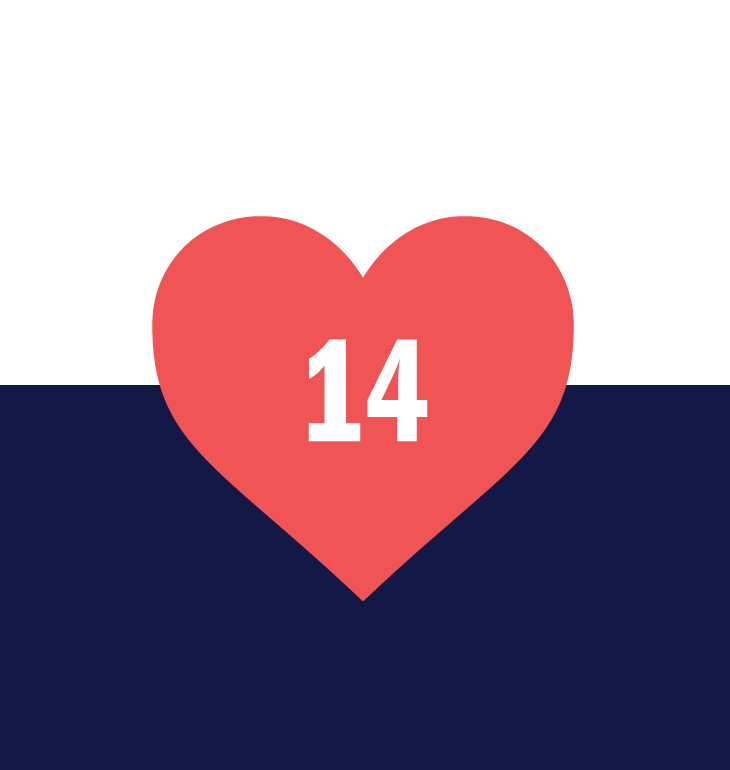
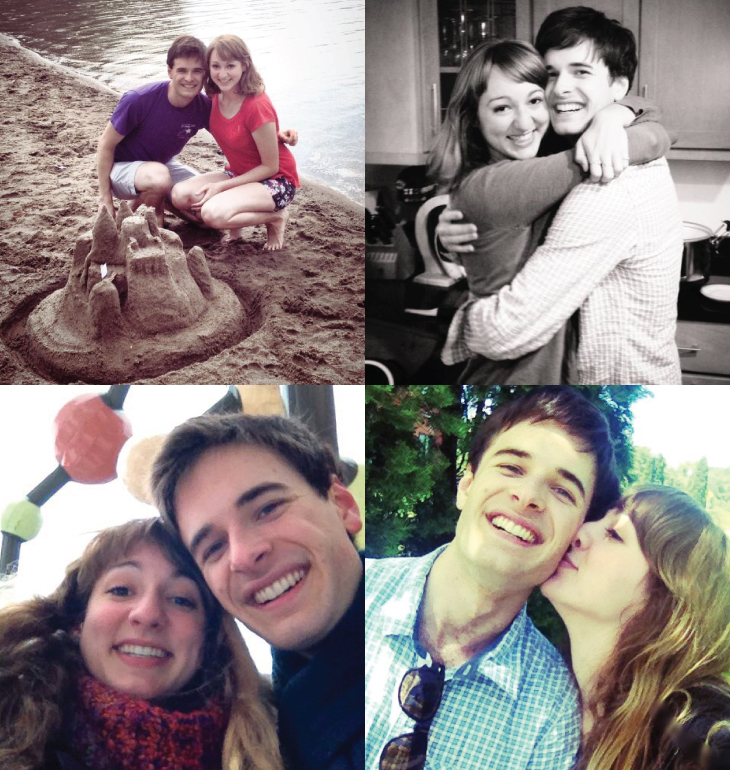
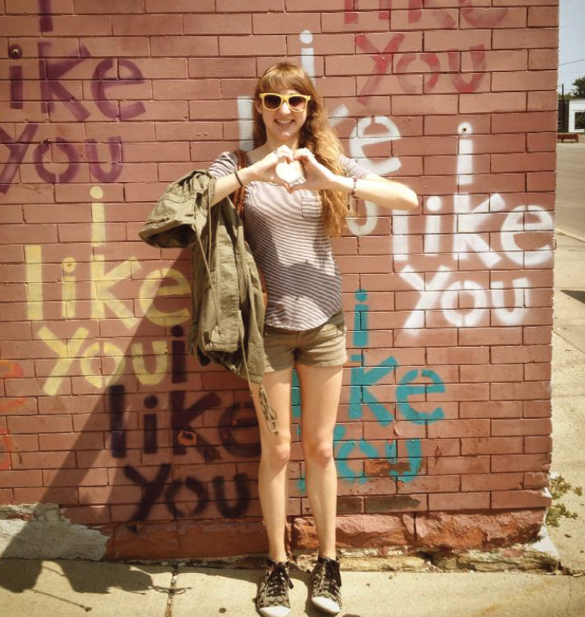

23 WEEKS APART
We had only just started dating about a month before and the 160 days stretched in front of us like one long, terrifying obstacle course. Steven was leaving for 23 weeks to study abroad in Toledo, Spain. Julia was staying in Minneapolis at the University of Minnesota working towards her design degree. Over the course of the semester, we shared thousands of texts, facebook messages, photos, and skype calls. This website tells the story of our long distance relationship through 23 conversations - one for every week that we were apart.

“I think my time management skills are really bad; you should give me some tips. Or maybe we could create a list of “components of the ideal approach towards schoolwork” and then hold each other to it. ‘Cause you’re a really good motivator for me and I’m being really less-than-ideal with my approach to getting stuff done.”

“I’ll look into solar-paneled paper (that exists, right?) for an internationally flying motorized paper airplane; that’s probably the most romantic method of correspondence possible. Actually…hmm. Probably not all that romantic at all; just super cool. Well, for the record, unless you specifically request a motorized-solar-paper-plane, I’ll probably stick to normal paper.”

“I have had SO much energy all day from our call. Like, Steven-energy to the extreme. It's hard to believe you're going to be waking up soon. We're both in different days again... Which is totally fun to think about. *Sighhh* It’s strange, but it feels like my heart moved from one side of the planet to the other when you got on that plane. I think it’s because a part of me is always with you. I hope you’re not feeling too homesick (I know if I was in your place, I might be feeling it a little bit…). Everything probably seems a little crazy and exhausting right now but you’re going to be absolutely fine. Better than fine. If you’re ever feeling low/homesick/overwhelmed, just remember that your family and I are thinking of you and supporting you and sending you love.”

“YOU!!! ADSFDSAJFKLD! YOU SENT ME YOUR BIG STEVE SWEATSHIRT! I’ve been sitting here on my bed speechless for the last 20 minutes smelling you!! AhhhHH! I’m utterly dying of happiness. Thankyouthankyouthankyou for everything! Happy Anniversary – I love you forever and always. And if I was with you right now, I’d be giving you the most lovely kisses ever. Have fun today; I’m with you in spirit.”
“I’m so glad you got that today. Gosh I’m so happy. Goodness gracious. Happy Anniversary – it’s basically impossible to think where I was 2 and-a-bit months ago, before the best part of my life came into it. I think about you all the time, and I love you.”

“Mmmm goodnight again. Hopefully I’ll somehow manage to hop back into that dream I was having about you before you called. The hardest part for me with this change is going to be figuring out how to NOT constantly be thinking of you and longing for you and pining after you. Like you said, we have to figure out our own personal ways of being *content* with the situation. *Sighh* Honestly, I haven't decided how on earth I'm going to do that, yet. Let me know if you have any brilliant ideas. I just want you to know how lucky I feel to have you. And I'll wait for you forever and follow you anywhere. Sleep well. I love you. It feels especially wonderful to say that on Christmas.”
Julia is a graphic design student at the University of Minnesota - College of Design. She has lived in 6 states and travelled to 39. Her family currently lives in Wisconsin. Apart from design, her passions include Disney songs, mango juice, and her stupid collie, Lucy.

Steven is a chemical engineering student at the University of Minnesota with a minor in Spanish. He originally hails from sunny San Francisco. He enjoys reading Harry Potter fanfiction, playing Smash Bros, and dicking around with LEGO bricks.

“Hopefully I’ll hop into the same dream and then teleport through the phone to talk with you in person. I was feeling a bit of that last night (thinking and longing and pining for you). Well, maybe more than a bit. I'm not sure whether to acknowledge it, or focus on other parts of our relationship and try to ignore physical closeness. I don't know - I don't want to not be able to talk about it, but it's difficult to talk about it without an element of longing creeping in. Maybe an element of longing, in that situation, is healthy? I don't know. Maybe I should just treat such thoughts with a sort of, "Well, we can't now - but when we do, it's going to be fantastic. In the meantime, it'll still be great." I love you. Waaayyy a lot. It's a beyond words sort of thing, but we know how big the feeling is. And I like *trying* to do that bigness justice with words. I love you through the warm cuddlingy night and the wavery sunrise, past the end of days. Merry Christmas.”

“What a good message to wake up to. I love you. It hasn’t changed in the way you describe, but I love that image, of a part of your mind and heart always being with me wherever I go – the same is true for me to you; I just haven’t noticed my feelings for you being directed to a geographically different spot. Maybe it’s ‘cause you didn’t move; only I did. I do know, though, that literally everything I see, I see with the lens of “I can’t wait to tell Julia about this.” And with so many exciting things/sights, I’m thinking that all day.
Buenas noches, amor de mi vida. Que te duermas en la saves de angeles – te quiero y te amo más que puedes imaginar. Hasta unas cortas horas, mi amor.”
“Haha you’re cute. The thought of you trying to find a motorized-solar-paper-plane was enough. Normal paper is pleeeenty romantic by itself. I love you.”

“We should totally talk about time management. That is a brilliant plan, because you’re such a huge motivator for me too. I love you to the moon and back. I hope your day has been full of happy thoughts and you haven’t been too sleepy.”
“Guess what day it is in Spain! If you could maybe call me at some point this evening your time, I’d love to wish you a Happy Valentine’s Day in person. I love you. We are fantastic. You are the happiest part of my life and all that happiness spills over until I can feel it in every moment of my life.”
“Mmm I wish I could accurately express how utterly euphoric I feel right now. You are my life and the reason for my happiness. I wish you could completely understand how special you are to me. I’m sending you all my love this morning. Happy Valentine’s Day.”